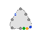
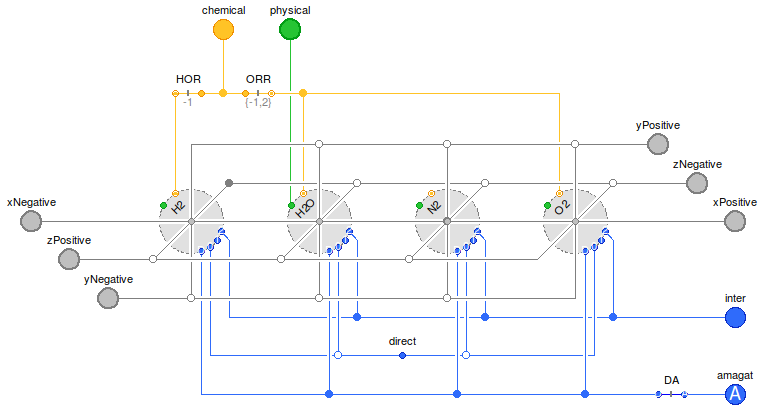
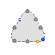
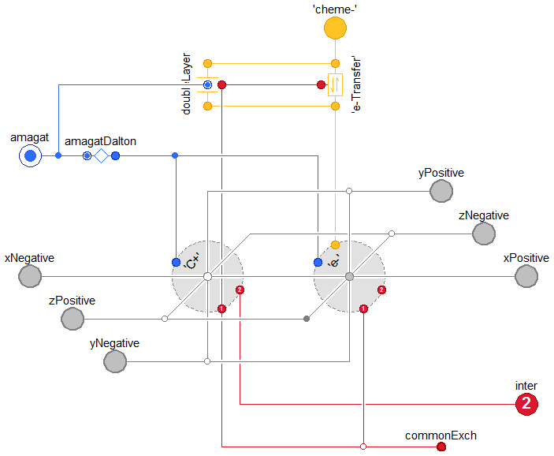
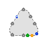
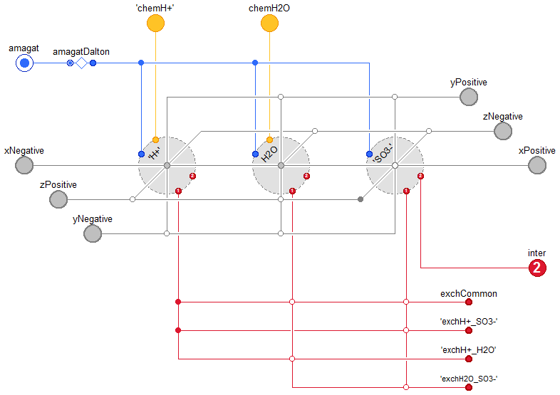
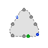
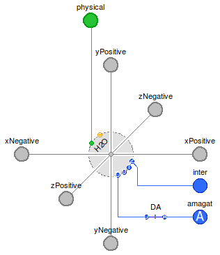

Table of Contents
- User's Guide
- Blocks
- Conditions
- Assemblies
- Regions
- Subregions
- Phases
- Species
- Chemistry
- Connectors
- Characteristics
- Units
- Quantities
- Utilities
- Icons
Download
- Latest: v0.1.2 (2013-12-13)
FCSys.Phases
Mixtures of speciesInformation
The graphite, ionomer, and liquid phases can only be used with a compressible phase (gas).
Extends from Modelica.Icons.Package (Icon for standard packages).Package Content
| Name | Description |
|---|---|
| Gas | Gas phase |
| Graphite | Graphite phase |
| Ionomer | Ionomer phase |
| Liquid | Liquid phase |
| PartialPhase | Base model for a phase |
| Independence factors for an exchange process |
 FCSys.Phases.Gas
Gas phase Information
It is usually appropriate to assume that species
exist at the same temperature within a phase. The time constants for thermal exchange
(τQE)
are usually much shorter than the time span of interest due to the very small coupling
resistances. If this is the case, set common.k_Q to zero.
This will reduce the index of the problem, so it may be
necessary to eliminate some initial conditions.
In bulk flow, it is usually appropriate to assume that species travel with the same velocity within
a phase. If this is the case, set the entries of common.k_Phi
to zero. This will reduce the index of the problem, so it may be
necessary to eliminate some initial conditions.
Please see the documentation of the PartialPhase model.
Extends from Icons.Phases.Gas (Icon for a gas phase), PartialPhase (Base model for a phase).
Parameters
| Type | Name | Default | Description |
|---|---|---|---|
| Integer | n_spec | countTrue({inclH2,inclH2O,in… | Number of species |
| Integer | n_trans | 1 | Number of transport axes |
| Volume | V | dalton.V | Volume of the phase [L3] |
| Geometry | |||
| NumberAbsolute | k[Axis] | {1,1,1} | Length factors for transport [1] |
| Independence factors | |||
| NumberAbsolute | k_inter_Phi[n_inter, n_trans] | ones(n_inter, n_trans) | For translational exchange with other phases [1] |
| NumberAbsolute | k_inter_Q[n_inter] | ones(n_inter) | For thermal exchange with other phases [1] |
| ExchangeParams | common | Among species in the phase | |
| ExchangeParams | H2_H2O | Between H2 and H2O | |
| ExchangeParams | H2O_N2 | Between H2O and N2 | |
| ExchangeParams | H2O_O2 | Between H2O and O2 | |
| ExchangeParams | N2_O2 | Between N2 and O2 | |
| Species | |||
| Boolean | inclH2 | false | Include H2 |
| Fixed | H2 | redeclare FCSys.Species.H2.G… | H2 model |
| Boolean | inclH2O | false | Include H2O |
| Fixed | H2O | redeclare FCSys.Species.H2O…. | H2O model |
| Boolean | inclN2 | false | Include N2 |
| Fixed | N2 | redeclare FCSys.Species.N2.G… | N2 model |
| Boolean | inclO2 | false | Include O2 |
| Fixed | O2 | redeclare FCSys.Species.O2.G… | O2 model |
Connectors
| Type | Name | Description |
|---|---|---|
| BoundaryBus | xNegative | Negative boundary along the x axis |
| BoundaryBus | yNegative | Negative boundary along the y axis |
| BoundaryBus | zNegative | Negative boundary along the z axis |
| BoundaryBus | xPositive | Positive boundary along the x axis |
| BoundaryBus | yPositive | Positive boundary along the y axis |
| BoundaryBus | zPositive | Positive boundary along the z axis |
| Dalton | dalton | Connector for additivity of pressure |
| Inter | inter[n_inter] | Connector to exchange momentum and energy with other phases |
| Chemical | chemH2[H2.n_chem] | Chemical connector for H2 |
| Chemical | chemH2O[H2O.n_chem] | Chemical connector for H2O |
| Chemical | chemO2[O2.n_chem] | Chemical connector for O2 |
Modelica definition
model Gas "Gas phase" import Modelica.Constants.inf; import Modelica.Math.BooleanVectors.countTrue; import FCSys.Characteristics.MobilityFactors; extends Icons.Phases.Gas; extends PartialPhase(final n_spec=countTrue({inclH2,inclH2O,inclN2,inclO2}), final V=dalton.V); // Conditionally include species. parameter Boolean inclH2=false "Include H2"; replaceable FCSys.Species.H2.Gas.Fixed H2( final n_trans, final n_inter, final kL, final n_chem, final k_intra_Phi, final k_intra_Q) if inclH2 constrainedby FCSys.Species.Fluid( n_trans=n_trans, n_intra=2, n_inter=n_inter, kL=kL, k_intra_Phi={common.k_Phi[cartTrans],H2_H2O.k_Phi[cartTrans]}, k_intra_Q={common.k_Q,H2_H2O.k_Q}) "H2 model"; parameter Boolean inclH2O=false "Include H2O"; replaceable FCSys.Species.H2O.Gas.Fixed H2O( final n_trans, final n_inter, final kL, final n_chem, final k_intra_Phi, final k_intra_Q) if inclH2O constrainedby FCSys.Species.Fluid( n_trans=n_trans, n_intra=4, n_inter=n_inter, kL=kL, k_intra_Phi={common.k_Phi[cartTrans],H2_H2O.k_Phi[cartTrans],H2O_N2.k_Phi[ cartTrans],H2O_O2.k_Phi[cartTrans]}, k_intra_Q={common.k_Q,H2_H2O.k_Q,H2O_N2.k_Q,H2O_O2.k_Q}) "H2O model"; parameter Boolean inclN2=false "Include N2"; replaceable FCSys.Species.N2.Gas.Fixed N2( final n_trans, final n_inter, final kL, final n_chem, final k_intra_Phi, final k_intra_Q) if inclN2 constrainedby FCSys.Species.Fluid( n_trans=n_trans, n_intra=3, n_inter=n_inter, kL=kL, k_intra_Phi={common.k_Phi[cartTrans],H2O_N2.k_Phi[cartTrans],N2_O2.k_Phi[ cartTrans]}, k_intra_Q={common.k_Q,H2O_N2.k_Q,N2_O2.k_Q}) "N2 model"; parameter Boolean inclO2=false "Include O2"; replaceable FCSys.Species.O2.Gas.Fixed O2( final n_trans, final n_inter, final kL, final n_chem, final k_intra_Phi, final k_intra_Q) if inclO2 constrainedby FCSys.Species.Fluid( n_trans=n_trans, n_intra=3, n_inter=n_inter, kL=kL, k_intra_Phi={common.k_Phi[cartTrans],H2O_O2.k_Phi[cartTrans],N2_O2.k_Phi[ cartTrans]}, k_intra_Q={common.k_Q,H2O_O2.k_Q,N2_O2.k_Q}) "O2 model"; // Independence factors ExchangeParams common(k_Phi={inf,inf,inf}, k_Q=0) if n_spec > 0 "Among species in the phase"; ExchangeParams H2_H2O(k_Phi=fill(MobilityFactors.k_H2_H2O(p_A=environment.p_dry, p_B=environment.p_H2O), 3), k_Q=inf) if inclH2 or inclH2O "Between H2 and H2O"; ExchangeParams H2O_N2(k_Phi=fill(MobilityFactors.k_H2O_N2(p_A=environment.p_H2O, p_B=environment.p_dry - environment.p_O2), 3), k_Q=inf) if inclH2O or inclN2 "Between H2O and N2"; ExchangeParams H2O_O2(k_Phi=fill(MobilityFactors.k_H2O_O2(p_A=environment.p_H2O, p_B=environment.p_O2), 3), k_Q=inf) if inclH2O or inclO2 "Between H2O and O2"; ExchangeParams N2_O2(k_Phi=fill(MobilityFactors.k_N2_O2(p_A=environment.p_dry - environment.p_O2, p_B=environment.p_O2), 3), k_Q=inf) if inclN2 or inclO2 "Between N2 and O2"; Connectors.BoundaryBus xNegative if inclTrans[Axis.x] "Negative boundary along the x axis"; Connectors.BoundaryBus yNegative if inclTrans[Axis.y] "Negative boundary along the y axis"; Connectors.BoundaryBus zNegative if inclTrans[Axis.z] "Negative boundary along the z axis"; Connectors.BoundaryBus xPositive if inclTrans[Axis.x] "Positive boundary along the x axis"; Connectors.BoundaryBus yPositive if inclTrans[Axis.y] "Positive boundary along the y axis"; Connectors.BoundaryBus zPositive if inclTrans[Axis.z] "Positive boundary along the z axis"; Connectors.Dalton dalton if n_spec > 0 "Connector for additivity of pressure"; Connectors.Inter inter[n_inter](each final n_trans=n_trans) if n_spec > 0 "Connector to exchange momentum and energy with other phases"; // Auxiliary variables (for analysis) output Q.PressureAbsolute p(stateSelect=StateSelect.never) = dalton.p if n_spec > 0 and environment.analysis "Total thermodynamic pressure"; Connectors.Chemical chemH2[H2.n_chem](each final n_trans=n_trans) if inclH2 "Chemical connector for H2"; Connectors.Chemical chemH2O[H2O.n_chem](each final n_trans=n_trans) if inclH2O "Chemical connector for H2O"; Connectors.Chemical chemO2[O2.n_chem](each final n_trans=n_trans) if inclO2 "Chemical connector for O2"; protected Connectors.InertNode exchCommon "Connector for exchange among species in the phase"; Connectors.InertNode exchH2_H2O "Connector for exchange between H2 and H2O"; Connectors.InertNode exchH2O_N2 "Connector for exchange between H2O and N2"; Connectors.InertNode exchH2O_O2 "Connector for exchange between H2O and O2"; Connectors.InertNode exchN2_O2 "Connector for exchange between N2 and O2"; equation // Chemical exchange connect(O2.chemical, chemO2); connect(H2.chemical, chemH2); connect(H2O.chemical, chemH2O); // Inert exchange connect(H2.inter, inter); connect(H2O.inter, inter); connect(N2.inter, inter); connect(O2.inter, inter); connect(H2.intra[1], exchCommon.node); connect(H2O.intra[1], exchCommon.node); connect(N2.intra[1], exchCommon.node); connect(O2.intra[1], exchCommon.node); connect(H2.intra[2], exchH2_H2O.node); connect(H2O.intra[2], exchH2_H2O.node); connect(H2O.intra[3], exchH2O_N2.node); connect(N2.intra[2], exchH2O_N2.node); connect(H2O.intra[4], exchH2O_O2.node); connect(O2.intra[2], exchH2O_O2.node); connect(N2.intra[3], exchN2_O2.node); connect(O2.intra[3], exchN2_O2.node); // Mixing connect(H2.dalton, dalton); connect(H2O.dalton, dalton); connect(N2.dalton, dalton); connect(O2.dalton, dalton); // Transport // --------- // H2 connect(H2.boundaries[transCart[Axis.x], Side.n], xNegative.H2); connect(H2.boundaries[transCart[Axis.x], Side.p], xPositive.H2); connect(H2.boundaries[transCart[Axis.y], Side.n], yNegative.H2); connect(H2.boundaries[transCart[Axis.y], Side.p], yPositive.H2); connect(H2.boundaries[transCart[Axis.z], Side.n], zNegative.H2); connect(H2.boundaries[transCart[Axis.z], Side.p], zPositive.H2); // H2O connect(H2O.boundaries[transCart[Axis.x], Side.n], xNegative.H2O); connect(H2O.boundaries[transCart[Axis.x], Side.p], xPositive.H2O); connect(H2O.boundaries[transCart[Axis.y], Side.n], yNegative.H2O); connect(H2O.boundaries[transCart[Axis.y], Side.p], yPositive.H2O); connect(H2O.boundaries[transCart[Axis.z], Side.n], zNegative.H2O); connect(H2O.boundaries[transCart[Axis.z], Side.p], zPositive.H2O); // N2 connect(N2.boundaries[transCart[Axis.x], Side.n], xNegative.N2); connect(N2.boundaries[transCart[Axis.x], Side.p], xPositive.N2); connect(N2.boundaries[transCart[Axis.y], Side.n], yNegative.N2); connect(N2.boundaries[transCart[Axis.y], Side.p], yPositive.N2); connect(N2.boundaries[transCart[Axis.z], Side.n], zNegative.N2); connect(N2.boundaries[transCart[Axis.z], Side.p], zPositive.N2); // O2 connect(O2.boundaries[transCart[Axis.x], Side.n], xNegative.O2); connect(O2.boundaries[transCart[Axis.x], Side.p], xPositive.O2); connect(O2.boundaries[transCart[Axis.y], Side.n], yNegative.O2); connect(O2.boundaries[transCart[Axis.y], Side.p], yPositive.O2); connect(O2.boundaries[transCart[Axis.z], Side.n], zNegative.O2); connect(O2.boundaries[transCart[Axis.z], Side.p], zPositive.O2); end Gas;
 FCSys.Phases.Graphite
Graphite phase Information
From a physical standpoint, the electrolytic double layer is probably best considered its own phase, but it is modeled as a part of the graphite phase in order to reduce the number of connections. It is assumed to store no material, translational momentum, or thermal energy. It only stores electrical energy due to a charge difference.
C+ and e- are assumed to have the same temperature. C+ should be used to initialize the temperature.
See Species.'e-'.Graphite.Fixed for assumptions. For more information, please see the PartialPhase model.
Extends from Icons.Phases.Solid (Icon for a solid phase), PartialPhase (Base model for a phase).
Parameters
| Type | Name | Default | Description |
|---|---|---|---|
| Integer | n_spec | countTrue({'inclC+','incle-'}) | Number of species |
| Integer | n_trans | 1 | Number of transport axes |
| Volume | V | -amagat.V | Volume of the phase [L3] |
| Geometry | |||
| NumberAbsolute | k[Axis] | {1,1,1} | Length factors for transport [1] |
| Independence factors | |||
| NumberAbsolute | k_inter_Phi[n_inter, n_trans] | ones(n_inter, n_trans) | For translational exchange with other phases [1] |
| NumberAbsolute | k_inter_Q[n_inter] | ones(n_inter) | For thermal exchange with other phases [1] |
| Species | |||
| Boolean | 'inclC+' | false | Include C+ |
| Fixed | 'C+' | redeclare FCSys.Species.'C+'… | C+ model |
| Boolean | 'incle-' | false | Include e- |
| Fixed | 'e-' | redeclare FCSys.Species.'e-'… | e- model |
| Assumptions | |||
| Boolean | 'incle-Transfer' | false | Include electron transfer |
| Boolean | inclDL | false | Include the double-layer capacitance |
Connectors
| Type | Name | Description |
|---|---|---|
| BoundaryBus | xNegative | Negative boundary along the x axis |
| BoundaryBus | yNegative | Negative boundary along the y axis |
| BoundaryBus | zNegative | Negative boundary along the z axis |
| BoundaryBus | xPositive | Positive boundary along the x axis |
| BoundaryBus | yPositive | Positive boundary along the y axis |
| BoundaryBus | zPositive | Positive boundary along the z axis |
| Inter | inter[n_inter] | Connector to exchange momentum and energy with other phases |
| Amagat | amagat | Connector for additivity of volume |
| Chemical | 'cheme-'[1] | Chemical connector for e- |
Modelica definition
model Graphite "Graphite phase" import assert = FCSys.Utilities.assertEval; import Modelica.Math.BooleanVectors.countTrue; extends Icons.Phases.Solid; extends PartialPhase(final n_spec=countTrue({'inclC+','incle-'}),final V=- amagat.V); // Conditionally include species. parameter Boolean 'inclC+'=false "Include C+"; replaceable FCSys.Species.'C+'.Graphite.Fixed 'C+'( final n_trans, final n_inter, final kL) if 'inclC+' constrainedby FCSys.Species.Solid( n_trans=n_trans, n_intra=1, n_inter=n_inter, kL=kL, final k_intra_Phi={ones(n_trans)}, final k_intra_Q={0}) "C+ model"; parameter Boolean 'incle-'=false "Include e-"; replaceable FCSys.Species.'e-'.Graphite.Fixed 'e-'(final n_trans, final n_inter) if 'incle-' constrainedby FCSys.Species.Fluid( n_trans=n_trans, n_intra=1, n_inter=0, final k_intra_Phi={ones(n_trans)}, final k_intra_Q={0}) "e- model"; parameter Boolean 'incle-Transfer'=false "Include electron transfer"; parameter Boolean inclDL=false "Include the double-layer capacitance"; Chemistry.Electrochemistry.ElectronTransfer 'e-Transfer'(redeclare constant Integer n_trans=1) if 'incle-' and 'incle-Transfer' "Electron transfer"; Chemistry.Electrochemistry.DoubleLayer doubleLayer(redeclare constant Integer n_trans=1) if 'incle-' and 'incle-Transfer' and inclDL "Electrolytic double layer"; // Note: n_trans must be constant in Dymola 2014 to prevent errors such as // "Failed to expand the variable // subregion.graphite.'e-Transfer'.negative.phi". The setting of n_trans=1 // must be manually changed at instantiation if additional transport axes // are enabled. Connectors.BoundaryBus xNegative if inclTrans[Axis.x] "Negative boundary along the x axis"; Connectors.BoundaryBus yNegative if inclTrans[Axis.y] "Negative boundary along the y axis"; Connectors.BoundaryBus zNegative if inclTrans[Axis.z] "Negative boundary along the z axis"; Connectors.BoundaryBus xPositive if inclTrans[Axis.x] "Positive boundary along the x axis"; Connectors.BoundaryBus yPositive if inclTrans[Axis.y] "Positive boundary along the y axis"; Connectors.BoundaryBus zPositive if inclTrans[Axis.z] "Positive boundary along the z axis"; Connectors.Inter inter[n_inter](each final n_trans=n_trans) if n_spec > 0 "Connector to exchange momentum and energy with other phases"; Connectors.Amagat amagat if n_spec > 0 "Connector for additivity of volume"; Connectors.Chemical 'cheme-'[1](each final n_trans=n_trans) if 'incle-' and 'incle-Transfer' "Chemical connector for e-"; protected Conditions.Adapters.AmagatDalton amagatDalton if n_spec > 0 "Adapter between additivity of volume and additivity of pressure"; Connectors.InertNode exchCommon "Connector for exchange among all species in the phase"; equation // Chemical exchange connect('e-Transfer'.negative, doubleLayer.negative); connect('e-Transfer'.positive, doubleLayer.positive); connect('e-Transfer'.negative, 'e-'.chemical[1]); connect('e-Transfer'.positive, 'cheme-'[1]); // Inert exchange connect('C+'.inter, inter); connect('C+'.intra[1], exchCommon.node); connect('e-'.intra[1], exchCommon.node); connect('e-Transfer'.inert, 'C+'.intra[1]); connect(doubleLayer.inert, 'e-Transfer'.inert); // Mixing connect(amagatDalton.amagat, amagat); connect(amagatDalton.dalton, 'C+'.dalton); connect(amagatDalton.dalton, 'e-'.dalton); connect(doubleLayer.amagat, amagat); // Transport // --------- // C+ connect('C+'.boundaries[transCart[Axis.x], Side.n], xNegative.'C+'); connect('C+'.boundaries[transCart[Axis.x], Side.p], xPositive.'C+'); connect('C+'.boundaries[transCart[Axis.y], Side.n], yNegative.'C+'); connect('C+'.boundaries[transCart[Axis.y], Side.p], yPositive.'C+'); connect('C+'.boundaries[transCart[Axis.z], Side.n], zNegative.'C+'); connect('C+'.boundaries[transCart[Axis.z], Side.p], zPositive.'C+'); // e- connect('e-'.boundaries[transCart[Axis.x], Side.n], xNegative.'e-'); connect('e-'.boundaries[transCart[Axis.x], Side.p], xPositive.'e-'); connect('e-'.boundaries[transCart[Axis.y], Side.n], yNegative.'e-'); connect('e-'.boundaries[transCart[Axis.y], Side.p], yPositive.'e-'); connect('e-'.boundaries[transCart[Axis.z], Side.n], zNegative.'e-'); connect('e-'.boundaries[transCart[Axis.z], Side.p], zPositive.'e-'); end Graphite;
 FCSys.Phases.Ionomer
Ionomer phase Information
Assumptions:
- The water in the ionomer does not directly participate in the reaction (only the water vapor does).
See Species.'H+'.Ionomer.Fixed for additional assumptions. For more information, please see the PartialPhase model.
Extends from Icons.Phases.Solid (Icon for a solid phase), PartialPhase (Base model for a phase).
Parameters
| Type | Name | Default | Description |
|---|---|---|---|
| Integer | n_spec | countTrue({'inclSO3-','inclH… | Number of species |
| Integer | n_trans | 1 | Number of transport axes |
| Volume | V | -amagat.V | Volume of the phase [L3] |
| Geometry | |||
| NumberAbsolute | k[Axis] | {1,1,1} | Length factors for transport [1] |
| Independence factors | |||
| NumberAbsolute | k_inter_Phi[n_inter, n_trans] | ones(n_inter, n_trans) | For translational exchange with other phases [1] |
| NumberAbsolute | k_inter_Q[n_inter] | ones(n_inter) | For thermal exchange with other phases [1] |
| Species | |||
| Boolean | 'inclSO3-' | false | Include C19HF37O5S- (abbreviated as SO3-) |
| Fixed | 'SO3-' | redeclare FCSys.Species.'SO3… | SO3- model |
| Boolean | 'inclH+' | false | Include H+ |
| Fixed | 'H+' | redeclare FCSys.Species.'H+'… | H+ model |
| Boolean | inclH2O | false | Include H2O |
| Fixed | H2O | redeclare FCSys.Species.H2O…. | H2O model |
| Exchange (click to edit) | |||
| ExchangeParams | common | Among all species in the phase | |
| ExchangeParams | 'H+_SO3-' | Between H+ and SO3-) | |
| ExchangeParams | 'H+_H2O' | Between H+ and H2O | |
| ExchangeParams | 'H2O_SO3-' | Between H2O and SO3- | |
Connectors
| Type | Name | Description |
|---|---|---|
| BoundaryBus | xNegative | Negative boundary along the x axis |
| BoundaryBus | yNegative | Negative boundary along the y axis |
| BoundaryBus | zNegative | Negative boundary along the z axis |
| BoundaryBus | xPositive | Positive boundary along the x axis |
| BoundaryBus | yPositive | Positive boundary along the y axis |
| BoundaryBus | zPositive | Positive boundary along the z axis |
| Amagat | amagat | Connector for additivity of volume |
| Inter | inter[n_inter] | Connector to exchange momentum and energy with other phases |
| Chemical | chemH2O[H2O.n_chem] | Chemical connector for H2O |
| Chemical | 'chemH+'['H+'.n_chem] | Chemical connector for H+ |
Modelica definition
model Ionomer "Ionomer phase" import Modelica.Constants.inf; import Modelica.Math.BooleanVectors.countTrue; extends Icons.Phases.Solid; extends PartialPhase( final n_spec=countTrue({'inclSO3-','inclH+',inclH2O}), final V=-amagat.V, n_inter=1); // Conditionally include species. parameter Boolean 'inclSO3-'=false "Include C19HF37O5S- (abbreviated as SO3-)"; replaceable FCSys.Species.'SO3-'.Ionomer.Fixed 'SO3-'( final n_trans, final n_inter, final kL, final k_intra_Phi, final k_intra_Q) if 'inclSO3-' constrainedby FCSys.Species.Solid( n_trans=n_trans, n_intra=3, n_inter=n_inter, kL=kL, k_intra_Phi={common.k_Phi[cartTrans],'H+_SO3-'.k_Phi[cartTrans],'H2O_SO3-'.k_Phi[ cartTrans]}, k_intra_Q={common.k_Q,'H+_SO3-'.k_Q,'H2O_SO3-'.k_Q}) "SO3- model"; parameter Boolean 'inclH+'=false "Include H+"; replaceable FCSys.Species.'H+'.Ionomer.Fixed 'H+'( final n_trans, final n_inter, final n_chem, final kL, final k_intra_Phi, final k_intra_Q) if 'inclH+' constrainedby FCSys.Species.Fluid( n_trans=n_trans, n_intra=3, n_inter=n_inter, kL=kL, k_intra_Phi={common.k_Phi[cartTrans],'H+_H2O'.k_Phi[cartTrans],'H+_SO3-'.k_Phi[ cartTrans]}, k_intra_Q={common.k_Q,'H+_SO3-'.k_Q,'H+_H2O'.k_Q}) "H+ model"; parameter Boolean inclH2O=false "Include H2O"; replaceable FCSys.Species.H2O.Ionomer.Fixed H2O( final n_trans, final n_inter, final n_chem, final kL, final k_intra_Phi, final k_intra_Q) if inclH2O constrainedby FCSys.Species.Fluid( n_trans=n_trans, n_intra=3, n_inter=0, kL=kL, k_intra_Phi={common.k_Phi[cartTrans],'H+_H2O'.k_Phi[cartTrans],'H2O_SO3-'.k_Phi[ cartTrans]}, k_intra_Q={common.k_Q,'H+_H2O'.k_Q,'H2O_SO3-'.k_Q}) "H2O model"; Connectors.BoundaryBus xNegative if inclTrans[Axis.x] "Negative boundary along the x axis"; Connectors.BoundaryBus yNegative if inclTrans[Axis.y] "Negative boundary along the y axis"; Connectors.BoundaryBus zNegative if inclTrans[Axis.z] "Negative boundary along the z axis"; Connectors.BoundaryBus xPositive if inclTrans[Axis.x] "Positive boundary along the x axis"; Connectors.BoundaryBus yPositive if inclTrans[Axis.y] "Positive boundary along the y axis"; Connectors.BoundaryBus zPositive if inclTrans[Axis.z] "Positive boundary along the z axis"; Connectors.Amagat amagat if n_spec > 0 "Connector for additivity of volume"; Connectors.Inter inter[n_inter](each final n_trans=n_trans) if n_spec > 0 "Connector to exchange momentum and energy with other phases"; Connectors.Chemical chemH2O[H2O.n_chem](each final n_trans=n_trans) if inclH2O "Chemical connector for H2O"; Connectors.Chemical 'chemH+'['H+'.n_chem](each final n_trans=n_trans) if 'inclH+' "Chemical connector for H+"; // Independence factors ExchangeParams common(k_Phi={inf,inf,inf},k_Q=0) if n_spec > 0 "Among all species in the phase"; ExchangeParams 'H+_SO3-'(final k_Phi, k_Q=inf) if 'inclSO3-' or 'inclH+' "Between H+ and SO3-)"; ExchangeParams 'H+_H2O'(k_Phi={0.02,0.02,0.02}, k_Q=inf) if 'inclH+' or inclH2O "Between H+ and H2O"; ExchangeParams 'H2O_SO3-'(k_Phi={1,1,1}, k_Q=inf) if 'inclSO3-' or inclH2O "Between H2O and SO3-"; protected Conditions.Adapters.AmagatDalton amagatDalton if n_spec > 0 "Adapter between additivity of volume and additivity of pressure"; Connectors.InertNode exchCommon "Connector for exchange among all species in the phase"; Connectors.InertNode 'exchH+_SO3-' "Connector for exchange between H+ and SO3-"; Connectors.InertNode 'exchH+_H2O' "Connector for exchange between H+ and H2O"; Connectors.InertNode 'exchH2O_SO3-' "Connector for exchange between H2O and SO3-"; equation // Chemical exchange connect(H2O.chemical, chemH2O); connect('H+'.chemical, 'chemH+'); // Inert exchange connect('SO3-'.inter, inter); connect('SO3-'.intra[1], exchCommon.node); connect('SO3-'.intra[2], 'exchH+_SO3-'.node); connect('SO3-'.intra[3], 'exchH2O_SO3-'.node); connect('H+'.intra[1], exchCommon.node); connect('H+'.intra[2], 'exchH+_H2O'.node); connect('H+'.intra[3], 'exchH+_SO3-'.node); connect(H2O.intra[1], exchCommon.node); connect(H2O.intra[2], 'exchH+_H2O'.node); connect(H2O.intra[3], 'exchH2O_SO3-'.node); // Mixing connect('SO3-'.dalton, amagatDalton.dalton); connect('H+'.dalton, amagatDalton.dalton); connect(H2O.dalton, amagatDalton.dalton); connect(amagatDalton.amagat, amagat); // Transport // --------- // SO3- connect('SO3-'.boundaries[transCart[Axis.x], Side.n], xNegative.'SO3-'); connect('SO3-'.boundaries[transCart[Axis.x], Side.p], xPositive.'SO3-'); connect('SO3-'.boundaries[transCart[Axis.y], Side.n], yNegative.'SO3-'); connect('SO3-'.boundaries[transCart[Axis.y], Side.p], yPositive.'SO3-'); connect('SO3-'.boundaries[transCart[Axis.z], Side.n], zNegative.'SO3-'); connect('SO3-'.boundaries[transCart[Axis.z], Side.p], zPositive.'SO3-'); // 'H+' connect('H+'.boundaries[transCart[Axis.x], Side.n], xNegative.'H+'); connect('H+'.boundaries[transCart[Axis.x], Side.p], xPositive.'H+'); connect('H+'.boundaries[transCart[Axis.y], Side.n], yNegative.'H+'); connect('H+'.boundaries[transCart[Axis.y], Side.p], yPositive.'H+'); connect('H+'.boundaries[transCart[Axis.z], Side.n], zNegative.'H+'); connect('H+'.boundaries[transCart[Axis.z], Side.p], zPositive.'H+'); // H2O connect(H2O.boundaries[transCart[Axis.x], Side.n], xNegative.H2O); connect(H2O.boundaries[transCart[Axis.x], Side.p], xPositive.H2O); connect(H2O.boundaries[transCart[Axis.y], Side.n], yNegative.H2O); connect(H2O.boundaries[transCart[Axis.y], Side.p], yPositive.H2O); connect(H2O.boundaries[transCart[Axis.z], Side.n], zNegative.H2O); connect(H2O.boundaries[transCart[Axis.z], Side.p], zPositive.H2O); end Ionomer;
 FCSys.Phases.Liquid
Liquid phase Information
Please see the documentation of the PartialPhase model.
Extends from Icons.Phases.Liquid (Icon for a liquid phase), PartialPhase (Base model for a phase).
Parameters
| Type | Name | Default | Description |
|---|---|---|---|
| Integer | n_spec | if inclH2O then 1 else 0 | Number of species |
| Integer | n_trans | 1 | Number of transport axes |
| Volume | V | -amagat.V | Volume of the phase [L3] |
| Geometry | |||
| NumberAbsolute | k[Axis] | {1,1,1} | Length factors for transport [1] |
| Independence factors | |||
| NumberAbsolute | k_inter_Phi[n_inter, n_trans] | ones(n_inter, n_trans) | For translational exchange with other phases [1] |
| NumberAbsolute | k_inter_Q[n_inter] | ones(n_inter) | For thermal exchange with other phases [1] |
| Species | |||
| Boolean | inclH2O | false | Include H2O |
| Fixed | H2O | redeclare FCSys.Species.H2O…. | H2O model |
Connectors
| Type | Name | Description |
|---|---|---|
| BoundaryBus | xNegative | Negative boundary along the x axis |
| BoundaryBus | yNegative | Negative boundary along the y axis |
| BoundaryBus | zNegative | Negative boundary along the z axis |
| BoundaryBus | xPositive | Positive boundary along the x axis |
| BoundaryBus | yPositive | Positive boundary along the y axis |
| BoundaryBus | zPositive | Positive boundary along the z axis |
| Inter | inter[n_inter] | Connector to exchange momentum and energy with other phases |
| Amagat | amagat | Connector for additivity of volume |
| Chemical | chemH2O[H2O.n_chem] | Chemical connector for H2O |
Modelica definition
model Liquid "Liquid phase" extends Icons.Phases.Liquid; extends PartialPhase(final n_spec=if inclH2O then 1 else 0,final V=-amagat.V); // Conditionally include species. parameter Boolean inclH2O=false "Include H2O"; // Auxiliary variables (for analysis) output Q.PressureAbsolute p(stateSelect=StateSelect.never) = amagat.p if n_spec > 0 and environment.analysis "Total thermodynamic pressure"; replaceable FCSys.Species.H2O.Liquid.Fixed H2O( final n_trans, final n_inter, final kL, final n_chem) if inclH2O constrainedby FCSys.Species.Fluid( n_trans=n_trans, n_inter=n_inter, kL=kL) "H2O model"; Connectors.BoundaryBus xNegative if inclTrans[Axis.x] "Negative boundary along the x axis"; Connectors.BoundaryBus yNegative if inclTrans[Axis.y] "Negative boundary along the y axis"; Connectors.BoundaryBus zNegative if inclTrans[Axis.z] "Negative boundary along the z axis"; Connectors.BoundaryBus xPositive if inclTrans[Axis.x] "Positive boundary along the x axis"; Connectors.BoundaryBus yPositive if inclTrans[Axis.y] "Positive boundary along the y axis"; Connectors.BoundaryBus zPositive if inclTrans[Axis.z] "Positive boundary along the z axis"; Connectors.Inter inter[n_inter](each final n_trans=n_trans) if n_spec > 0 "Connector to exchange momentum and energy with other phases"; Connectors.Amagat amagat if n_spec > 0 "Connector for additivity of volume"; Connectors.Chemical chemH2O[H2O.n_chem](each final n_trans=n_trans) if inclH2O "Chemical connector for H2O"; protected Conditions.Adapters.AmagatDalton amagatDalton if n_spec > 0 "Adapter between additivity of volume and additivity of pressure"; equation // Chemical exchange connect(H2O.chemical, chemH2O); // Inert exchange connect(H2O.inter, inter); // Mixing connect(amagatDalton.amagat, amagat); connect(amagatDalton.dalton, H2O.dalton); // Transport // --------- // H2O connect(H2O.boundaries[transCart[Axis.x], Side.n], xNegative.H2O); connect(H2O.boundaries[transCart[Axis.x], Side.p], xPositive.H2O); connect(H2O.boundaries[transCart[Axis.y], Side.n], yNegative.H2O); connect(H2O.boundaries[transCart[Axis.y], Side.p], yPositive.H2O); connect(H2O.boundaries[transCart[Axis.z], Side.n], zNegative.H2O); connect(H2O.boundaries[transCart[Axis.z], Side.p], zPositive.H2O); end Liquid;
FCSys.Phases.PartialPhase
Base model for a phaseInformation
The scaling factor for diffusive transport (k) is a vector which directly affects the resistance associated with the transport of material, transverse translational momentum, and energy of all of the species within the phase. It can be used to introduce minor head loss or the effects of porosity or tortousity. These effects may be anisotropic. Using Bruggeman correction [Weber2004, p. 4696], the factor (k) within a phase should be set to ε-1/2 along each axis, where ε is the volumetric filling ratio, or the ratio of the volume of the phase to the total volume of the subregion. The Bruggeman factor itself increases resistance by a ε-3/2, but a factor of ε-1 is included inherently.
Parameters
| Type | Name | Default | Description |
|---|---|---|---|
| Integer | n_spec | Number of species | |
| Integer | n_trans | 1 | Number of transport axes |
| Geometry | |||
| NumberAbsolute | k[Axis] | {1,1,1} | Length factors for transport [1] |
| Independence factors | |||
| NumberAbsolute | k_inter_Phi[n_inter, n_trans] | ones(n_inter, n_trans) | For translational exchange with other phases [1] |
| NumberAbsolute | k_inter_Q[n_inter] | ones(n_inter) | For thermal exchange with other phases [1] |
Modelica definition
partial model PartialPhase "Base model for a phase" import Modelica.Math.BooleanVectors.index; parameter Integer n_spec(start=0) "Number of species"; parameter Integer n_inter=0 "Number of exchange connections with other phases"; // Geometric parameters parameter Q.NumberAbsolute k[Axis]( each min=Modelica.Constants.small, each final nominal=1) = {1,1,1} if n_spec > 0 "Length factors for transport"; parameter Integer n_trans=1 "Number of transport axes"; // Note: This can't be an inner/outer parameter in Dymola 2014. inner Q.Volume V=0 if n_spec > 0 "Volume of the phase"; // Independence factors inner parameter Q.NumberAbsolute k_inter_Phi[n_inter, n_trans]=ones(n_inter, n_trans) if n_spec > 0 "For translational exchange with other phases"; inner parameter Q.NumberAbsolute k_inter_Q[n_inter]=ones(n_inter) if n_spec > 0 "For thermal exchange with other phases"; // Auxiliary variables (for analysis) output Q.NumberAbsolute epsilon=V/product(L) if n_spec > 0 and environment.analysis "Volumetric fill fraction"; protected outer parameter Q.Length L[Axis] if n_spec > 0 "Length of the subregion"; final parameter Q.Length kL[:]=k[cartTrans] .* L[cartTrans] if n_spec > 0 "Effective transport lengths"; final inner Q.Area Aprime[n_trans]=fill(V, n_trans) ./ L[cartTrans] if n_spec > 0 "Effective cross-sectional areas"; outer parameter Integer cartTrans[:] "Cartesian-axis indices of the components of translational momentum"; outer parameter Integer transCart[:] "Boundary-pair indices of the Cartesian axes"; outer parameter Boolean inclTrans[Axis] "true, if each pair of boundaries is included"; outer Conditions.Environment environment "Environmental conditions"; end PartialPhase;
 FCSys.Phases.ExchangeParams
FCSys.Phases.ExchangeParams
Independence factors for an exchange process
Information
Extends from Modelica.Icons.Record (Icon for records).
Parameters
| Type | Name | Default | Description |
|---|---|---|---|
| NumberAbsolute | k_Phi[Axis] | {1,1,1} | Translational [1] |
| NumberAbsolute | k_Q | 1 | Thermal [1] |
Modelica definition
record ExchangeParams "Independence factors for an exchange process" extends Modelica.Icons.Record; parameter Q.NumberAbsolute k_Phi[Axis]={1,1,1} "Translational"; parameter Q.NumberAbsolute k_Q=1 "Thermal"; end ExchangeParams;